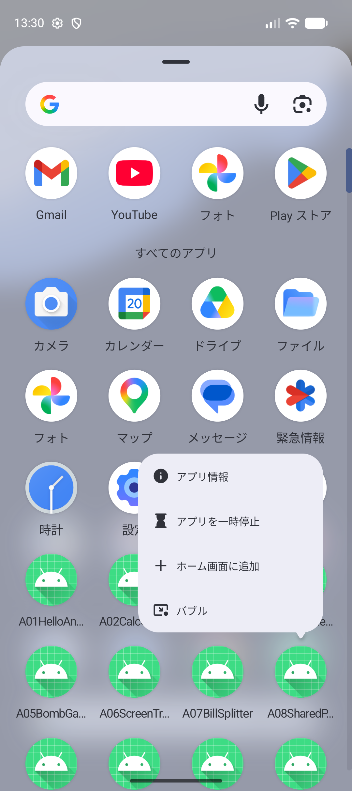
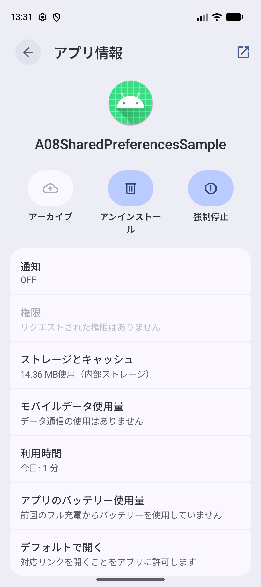

ANDROID PROGRAMMING 1 / 共通資料・授業サポート
エミュレータの準備と
アプリの実行
Macの中でAndroid端末を動かします。一度準備すると、次の授業でも使えます。
1. すでにある端末を探す
エミュレータは、アプリを試すための練習用端末です。端末を探すのも作るのも、Android Studioの Device Manager（端末を管理する画面）で行います。まだプロジェクトを開いていなくても使えます。
- Device Managerを開きます。開き方は、いまAndroid Studioに出ている画面で決まります。次の2つのどちらかです。
| いま出ている画面 | Device Managerの開き方 |
|---|---|
| 最初の画面（Welcome画面） まだプロジェクトを開いていない | 右上の Open の右にある ⋮（縦に並んだ3つの点）をクリックし、出てきたメニューで Virtual Device Manager を選びます。 |
| プロジェクトを開いている コードを書く画面が出ている | 上のメニューで View → Tool Windows → Device Manager を選びます。 |
最初の画面に ⋮ が見つからないとき
⋮ のかわりに、More Actions という文字が出ていることがあります。そのときは More Actions をクリックし、同じように Virtual Device Manager を選びます。
どちらの場合も Device Manager が開き、端末の一覧が出ます。最初の画面から開いたときは、別のウィンドウで開きます。
- 端末の一覧に jec_26cm_android1_Pixel 9a があるか確認します。名前の区切りが
_で表示されることもあります。 - 見つかったら、その行の三角形 ▶ をクリックします。
- Androidのホーム画面が出るまで待ちます。画面がロックされていたら、画面の下から上へドラッグします。
成功の目印
スマートフォンの形の画面が開き、ホーム画面のアイコンが見える。
端末があった人は、3. アプリを動かすへ進みます。
2. 端末がないときに作る
ダウンロードには時間がかかるため、授業中は先に先生へ知らせてください。先生が準備した端末があれば、それを使います。
- Device Managerの ＋ → Create Virtual Device をクリックします。画面によっては Create Device と表示されます。
- Phoneの一覧で Pixel 9a を選び、Next。
- Androidの System Image（端末を動かすためのデータ）は API 37.1 を選びます。
- ダウンロードの印がある場合はクリックし、画面の案内に従います。ダウンロードが終わったら次へ進みます。
- 端末名を
jec_26cm_android1_Pixel 9aにして Finish。名前を後から変える画面では、作成後の編集から同じ名前にします。 - 一覧の ▶ で起動し、ホーム画面が出ることを確認します。
System Imageを選ぶときの注意
一覧には 37.2 も並びます。選ぶのは 37.1 のほうです。37.1 は名前に 16 KB Page Size と付いたものしかないので、それを選んでください。
3. アプリを動かす
ここからは、プロジェクトを開いてから行います。共通資料：授業を始めるまでの準備の手順5から来た人は、ここでその資料に戻り、手順5の続きから進めます。エミュレータは起動したままにしておきます。
- Android Studio上部で、実行するものが app になっているか確認します。
- 端末の選択欄で jec_26cm_android1_Pixel 9a を選びます。
- 上部の Run ▶ をクリックします。
- ビルド（コードからアプリを作る処理）が終わるまで待ちます。アプリの画面が出たら、そのステップの「成功の目印」と比べます。
コードを変えるたびに、この順で実行します。元の文字から試したいときは、Android Studioの Stop ■ でアプリを止め、もう一度 Run ▶ を押します。
エミュレータの画面が見つからない場合は、View → Tool Windows → Running Devices を開きます。別ウィンドウで開く設定の場合は、Dockのエミュレータも確認します。
4. アプリを終了する・アプリを消す
データを保存する単元の「完成チェック」で使います。どちらもエミュレータの画面で操作します。
| 操作 | 保存したデータ | 使う場面 |
|---|---|---|
| アプリを終了する | 残る | 終了して開き直しても、データが残っているかを確かめる |
| アプリを消す（アンインストール） | いっしょに消える | 何も保存されていない、最初の状態から確かめる |
エミュレータでは、マウスで操作します。スワイプは、マウスのボタンを押したまま動かして離す操作です。長押しは、マウスを動かさずに、ボタンを1秒ほど押したままにする操作です。
アプリを終了する
- 画面のいちばん下にある横棒を、上へスワイプします。画面のまん中あたりで止めてから離します。
- 最近使ったアプリの画面になります。開いていたアプリが、小さくなって並びます。
- 終了したいアプリを、上へスワイプします。画面の外へ消えれば終了です。
止めずにすばやくスワイプすると、ホーム画面に戻るだけで、手順2の画面は出ません。ホーム画面に戻っただけでは、アプリは終了していません。もう一度アプリを開いて、手順1からやり直します。
アプリを消す（アンインストール）
アプリといっしょに、そのアプリが保存したデータも消えます。
- ホーム画面を出します。アプリが開いているときは、画面のいちばん下にある横棒を、上へすばやくスワイプします。
- ホーム画面のまん中あたりを、下から上へスワイプします。すべてのアプリと書かれた一覧が出ます。いちばん下の横棒から始めると、一覧は出ません。
- 消したいアプリのアイコンを長押しします。見つからないときは、一覧を上へスワイプして探します。
- 出てきたメニューの アプリ情報 を押します（画像①）。
- ごみ箱の絵の アンインストール を押します（画像②）。
- このアプリをアンインストールしますか？ と出たら、右の アンインストール を押します。
{kind=link}

{kind=link}

成功の目印
画面の下に 「（アプリの名前）」をアンインストールしました と出て、すべてのアプリの一覧からアイコンが消える。
消したアプリは、Android Studioで Run ▶ を押せば、もう一度入ります。保存したデータは空の状態から始まります。
長押しのとき、マウスを動かさない
押したまま動かすと、アイコンを別の場所へ移す操作になります。メニューが出るまで、マウスを止めたまま待ちます。
5. 動かないとき
| 状態 | やってみること |
|---|---|
| No Devicesと出る | Device Managerを開き、授業の端末を起動する。 |
| Runが押せない | Gradle Syncの進行中か確認する。終わっても押せなければ、上部でappを選び直す。 |
| 端末の画面が黒い | 端末の電源ボタンを1回押す。起動直後なら待つ。数分変わらなければ先生に知らせる。 |
| アプリが出ない | 下のBuildやRunのエラーを確認する。別の端末を選んでいないかも確認する。 |
| Gradle Syncが失敗する | ネット接続とエラーメッセージを確認し、先生に見せる。SDK・JDKなどの設定は教員用資料で確認する。 |
| APIが低いと言われる | API 37.1 で作った授業用端末 jec_26cm_android1_Pixel 9a を選び直す。 |
| ずっと起動中・offlineのまま | 先生に端末名と状態を見せる。必要なら先生と一緒に端末を停止して起動し直す。 |
端末が動けば、開いていた教科書のステップに戻ります。